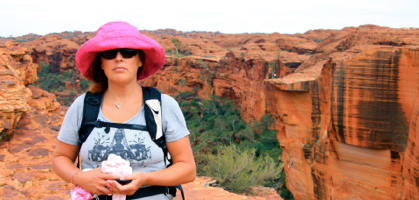
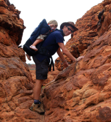

Kings Canyon

Kings Canyon Rim Walk
tirsdag den 11. december 2007

Kl. er 6 om morgenen. Camilla og jeg lister rundt for at få pakket de sidste ting til vores tidlige vandretur. Det vigtigste er masser af væske og hatte. Pigerne vågner af sig selv og er klar til at tage afsted. Vi får lige lidt morgenmad, og så kører vi mod kløften.
De første biler er ankommet, men vi er alligevel alene. Vi begynder opstigningen kl. 8.25. Turen er berammet til 3-4 timer for voksne i god form. Det er lidt svært at forstå, når ruten “kun” er 6 km, men der er selvfølgelig rigtig mange højdemeter, og vi har en 4 årig med, samt Stella på 1 år i en bærerygsæk, så vi må se, hvor lang tid det tager, og forhåbentlig er vi nede før middagsheden for alvor sætter ind.
Vi er nu ret heldige med vejret. Her er 27 grader og der blæser en behagelig vind. Det er lettere overskyet, så solen har ikke så meget magt.
Den første del af turen består af en meget stejl opstigning. Man har med vilje lagt den sværeste del først på turen , hvor folk har flest kræfter. Gårsdagens prøveopstigning sidder lidt i lårene og vi skal lige varmes op, men det går fint. Oppe på toppen får vi lidt at drikke, nyder udsigten og så er det ellers afsted. Vi er stadig helt alene og bevæger os langsomt gennem et månelignende landskab, der er utrolig smukt og meget anderledes. Mærkeligt at dette sted blev skabt for 400 millioner år siden!

Vi kravler op igen og går videre. Viola er blevet lovet en belønning ved 4 km mærket i form af energidrik og vingummier, så hun kigger ivrigt på alle skiltene. Der går et godt stykke tid før vi når punktet, men vi er stadig friske og ved nu, at vi nok skal klare turen.
Den sidste del går langs kanten ned til dalen. Der er mange hundrede meter ned og det kilder i maven. Ved 5 km mærket tager vi et: “jeg klarede det” billede af vores seje datter, resten af turen er nedstigning over klipper, og vi er fremme ved bilen efter 2,5 time - super godt gået når man kun er 4 1/2 år.
Både Camilla og jeg er glade for at vi tog chancen. Kings Canyon er ikke et sted, hvor man bare lige kommer forbi. Gåturen åbnede så sent som i 1984 og er noget af det smukkeste vi har oplevet. Og så havde vi stedet helt for os selv. Mætte af indtryk kører vi tilbage til resortet for at hente vores bagage - klar til næste eventyr.
Camilla tæt ved kanten. Bemærk de små mennesker på den modsatte kant